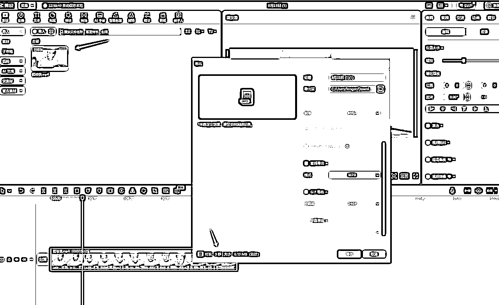

来源：https://dmrbcelpjz.feishu.cn/docx/Z1zYdPNEBoWrDGxRxsHcZBAWnLg
你好，我是Longer
今天分享一下，最近很火的“回答我”视频。
前几天很多人都是通过viggle.ai去制作（需要梯子），在这一步劝退了很多人，今天咱们用国内版的，也可以实现。
21个作品，15.7万粉丝
具体操作步骤：
随便提取回答我视频文案，然后用“你是一位文案专家，请根据下面文案，仿写一篇“书读不进的“回答我文案，把老张改成墨子，里面的题材也改成墨子相关的内容。提供文案如下：”进行修改
提示词：生成古人墨子，正脸像，上半身，古代宋院体人物画风，工笔重彩技法，细腻的线条勾勒，平面化构图。人物表情端庄，衣纹流畅自然
在抖音搜索“回答我原视频”
https://www.douyin.com/root/search/%E5%9B%9E%E7%AD%94%E6%88%91%E5%8E%9F%E8%A7%86%E9%A2%91?aid=4de6e88a-d865-4a0f-8d19-b458d2e69b4c&modal_id=7476319568890301755&type=general
用数字人，动作模仿，上传墨子图片和回答原视频
1、上传生成好的角色视频，输入deepseek生成的文案
2、然后创建音色，音色用剪映剪辑出一段5-10s

1、识别歌词，把没有音频部分删掉
2、调整比例3:4，修改文字样式，导出